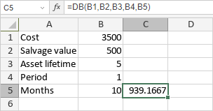

DB funkcija
Funkcija DB je jedna od finansijskih funkcija. Koristi se za izračunavanje amortizacije sredstva za određeni računovodstveni period koristeći metodu fiksnog opadajućeg salda.
Sintaksa
DB(cost, salvage, life, period, [month])
Funkcija DB ima sledeće argumente:
| Argument | Opis |
|---|---|
| cost | Trošak sredstva. |
| salvage | Vrednost sredstva na kraju njegovog životnog veka. |
| life | Ukupan broj perioda u životnom veku sredstva. |
| period | Period za koji želite da izračunate amortizaciju. Vrednost mora biti izražena u istim jedinicama kao life. |
| month | Broj meseci u prvoj godini. Ovo je opcioni argument. Ako nije naveden, funkcija pretpostavlja da je month 12. |
Napomene
Kako primeniti funkciju DB.
Primeri
Slika ispod prikazuje rezultat koji vraća funkcija DB.
